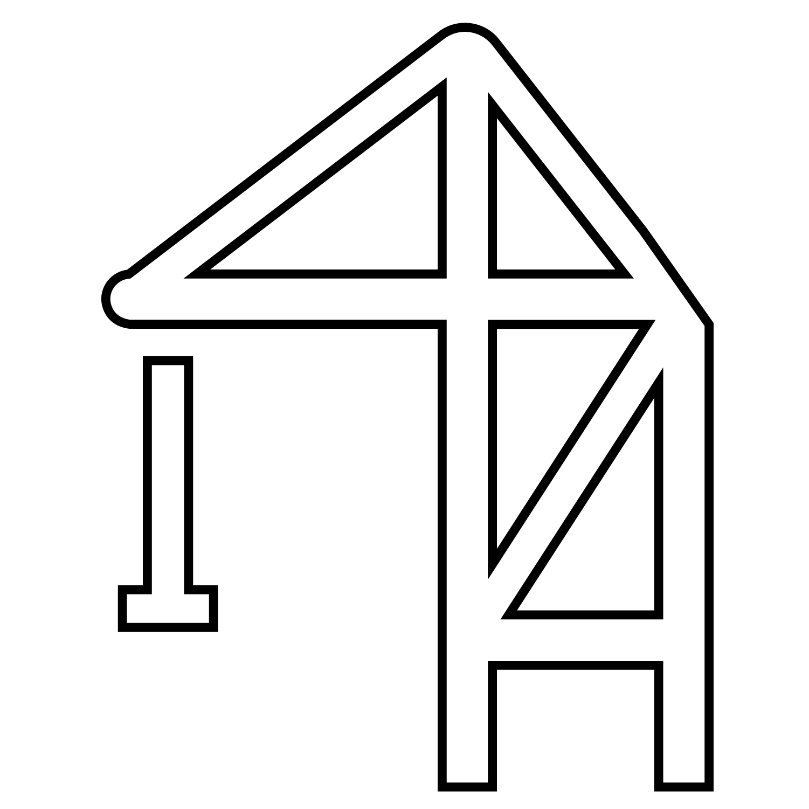
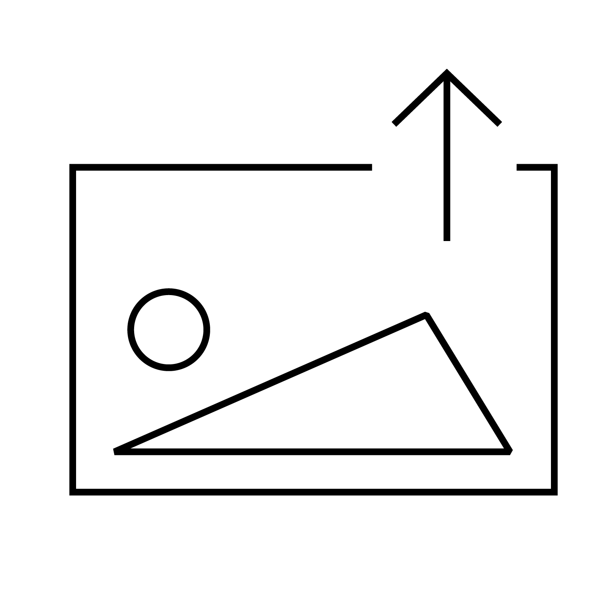
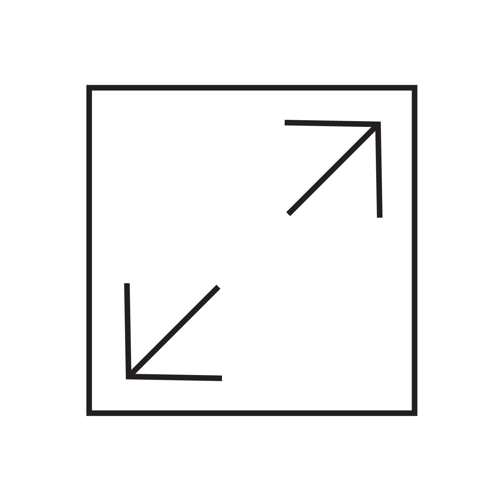
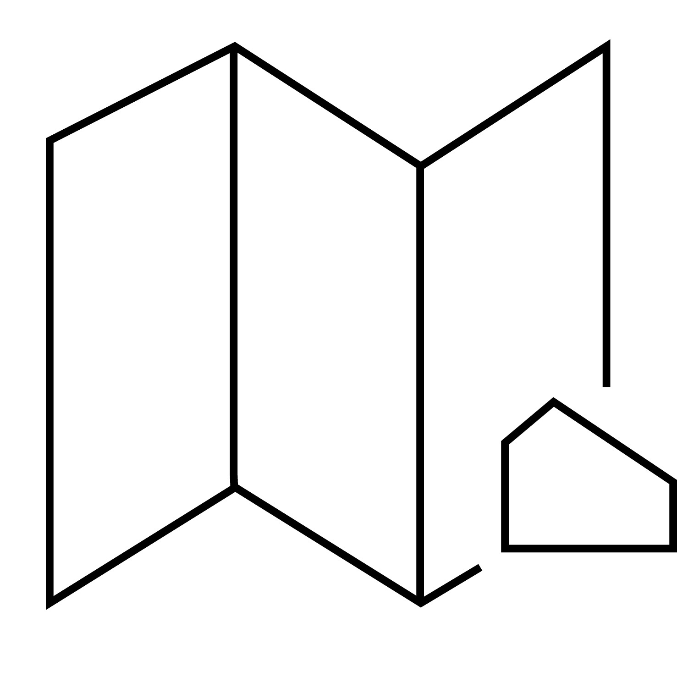
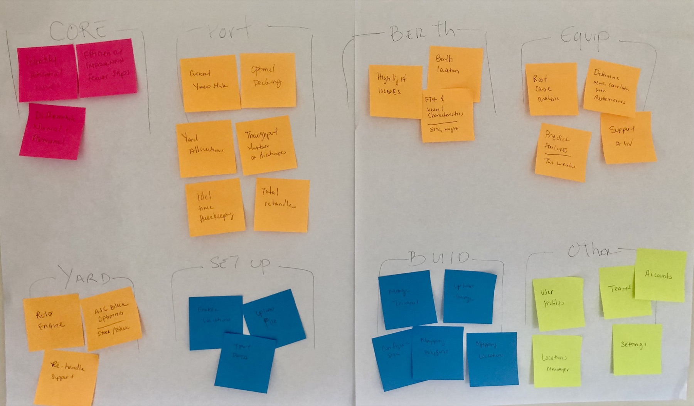
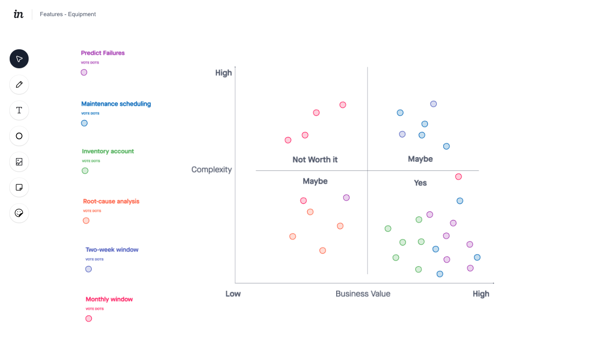

Avlino · Brand & Product Design
The Cue
to Act
Avlino’s AI could see berth conflicts, yard congestion, and equipment failures before they happened. I built the brand and the product that turned each prediction into a clear cue a terminal team could act on, before the delay.
Overview
Smart Models
No Way to Act
Container terminals ran on reaction. A crane broke down and the schedule fell apart. A vessel arrived late and the yard had no plan for it. Every surprise meant idle equipment, extra container moves, and missed berth windows.
Avlino had machine learning models that could see some of these problems coming. It did not have a way to sell that, or a way for anyone on a terminal to use it. A prediction nobody sees in time is just a report.
Identity
An interim wordmark and no brand system. Avlino described itself by what it used, data science and machine learning, with nothing that told a buyer why Avlino.
Product
Demos built around what stakeholders wanted to see. Nobody had defined who would use the product on a shift.
Decision
Predictions had no path to the person who could act on them. The models could see a delay coming. The terminal still found out after.
My Call
The AI was the product, so the design problem was the cue. Every model output had to reach the right person, in the view they already work in, with enough context to act. I built the brand and the product as one system for that reason.
Constraints
No product owner, and at first no access to terminal users. The models had real data gaps. Modules would ship at different times, and the audience was a skeptical, labor intensive industry that distrusts hype.
Brand Discovery
Memorable, Credible
and Trusted
An AI company asking terminal operators to change how they work has a credibility problem before it has a design problem. I led a series of working sessions with leadership to set the brief before any visual work began.
-
Brand Objectives
Brand fundamentals
Drawing on the basics every strong brand guide shares, I opened with three goals: be memorable, provide credibility, build trust. They gave leadership a shared standard before we talked about Avlino.
-
Big Ideal Framework
Cultural tension × brand’s best self
Using Ogilvy’s Big Ideal framework, we mapped what is happening in the industry against what Avlino delivers at its best. The overlap pointed to AI that augments decision making, so the brand had to feel like a partner to operators.
-
Positioning Statement
Avlino’s starting positioning promised “high quality, cost effective, and efficient intelligence solutions.” Using Geoffrey Moore’s positioning framework, we filled in the statement, and it showed the gap. The old version described what Avlino used, not why a buyer should choose it. The website now leads with the operational challenge before the technology.
BeforeHigh quality, cost effective, and efficient intelligence solutions that integrate business strategy, data science, and domain knowledge.
AfterFor [terminal operators] who [need to stop finding problems after they happen], Avlino is [AI decision support] that [gives each prediction a clear next move].
-
Brand Personification and Attribute Spectrum
Brand as a person · Audience profiling · Ten trait sliders
Using Aaker’s brand as a person model, we defined who Avlino would be as a person, profiled the customer base, then placed Avlino on ten trait scales. The result: high tech, groundbreaking, and vibrant, but formal and never loud. That became the visual brief: bold color inside a structured layout.
-
Touchpoint Mapping
Brand touchpoint wheel
Using Prophet’s touchpoint wheel, we mapped every place the brand had to show up, from the website and campaigns to product dashboards. Every color, typeface, and icon needed a job in both places.
The Logo
Brilliant Minds
as the Hero
The logo came out of the personality work. Unpacking who Avlino was kept landing on its people. The data scientists and engineers were brilliant minds, and the way they could see a problem before it happened felt almost superhuman.
So I built the mark from two worlds: the math symbols and equations those minds work in, and the emblem of a superhero. The final mark is one symbol that carries both.
For the wordmark, I started from an existing typeface rather than drawing from scratch, then altered and customized the letterforms and spacing so the wordmark and the mark read as one system.
The Personality
The people behind the models were the story. Brilliant minds who could see what was coming, close to superhero.
The Math
I studied math symbols and equations, the language those minds think in, to find a form that felt precise and engineered.
The Hero
The symbol sits inside a circle like a hero’s crest, in brand yellow. It gives the intelligence a face buyers can remember.
The Identity System
Built to Run
Into the Product
I designed the brand knowing it would have to work inside a product, not only on a website. Every element had a job in both places.
Color
Color With a Job
Four core colors, each named for its job: navigation black, brand yellow, operational navy, and data cyan. Each one has tints and shades so charts and status views stay on brand.
Type
Type With Three Jobs
Montserrat for headlines and calls to action. Roboto for body copy and dense data. Fira Mono for emphasis, a signal that real engineering sits underneath.
Icons
Icons Built Like Equipment
A 4 point stroke, mostly squared corners, one or two rounded at 10px, and accent color on the details. The geometry matches the industrial world these buyers work in.




The Marketing Site
Lead With the Challenge
Then the Proof
I structured the homepage around how a skeptical buyer thinks. Each section answers the next question they would ask.
Name the operational problem before naming the technology.
The IP and technology, explained for business and domain experts.
Benefits and process, so the buyer can picture adoption.
Maritime and logistics, telecommunications, hospitality, each under one consistent frame.
- 0.1Challenge / Solution
- 0.2IP / Tech
- 0.3Benefits / Process
- 0.4Industry Solutions
Brand Outcomes
From Technical Story
to Point of View
- Positioning SharpenedA purpose built around augmenting decisions, written into the brand guideline as the foundation for everything after it.
- One System, Two JobsColor, type, and icons that worked on the website and carried operational meaning in the product.
- A Path Into ProductDiscovery mapped the brand from visual styling and the website through campaigns to solutions sub branding and solutions dashboards.
The same yellow that signals energy on the website marks the next action in the product.
Research
Learning the Brain
of the Product
PortFlow is a cloud based suite of cross functional modules for container terminals, with Avlino’s AI optimization technology as the brain underneath it. Before I designed a screen, I sat with data science to learn what each model predicted, what data it needed, and where it was weak. Those limits shaped the design as much as the users did.
What the Models Read
Vessel schedules, yard positions, equipment telemetry, gate activity.
My role: understand what data the models had, and where it was missing.
What They Predict
Berth conflicts, yard congestion, equipment failure, dispatch.
My role: learn what each model could actually predict.
What Comes Back
A prediction and a recommended next move.
My role: define how much a person needs to see, and at which level, to trust it.
Where a Person Acts
Where someone sees it, trusts it, and acts on it.
My role: design for the leader who bought it and the manager who uses it every shift.
What the Patterns Revealed
Buyer vs. User
A Line Nobody Had Drawn
The demos had been built for stakeholders, not for anyone on a shift. To hit the MVP goal, I needed to understand two audiences and map them against each other.
How I Listened
Four Ways In
I had no direct access to terminal users at first, so I built the picture from everything I could reach.
Phone and Virtual Interviews
Interviews with industry experts, using a discussion guide I developed.
Sourced Web Articles
Maritime traffic articles to understand the operational landscape.
Industry Specific Surveys
Research on the habits and workflows teams relied on day to day.
Behavioral Data
Behavioral stats, time lost and error rates, compared across the fragmented tools already in use.
What Surfaced
Two Audiences, Two Goals
The interviews and data surfaced two very different profiles: the operations leaders who approved the purchase, and the equipment managers who lived in it every shift. Their goals rarely lined up, and that gap was the insight.
Frank’s daily friction became the signal for what the product actually needed to solve, without losing sight of what operations leaders needed to justify the investment.
![Persona sheet for Frank Roth, Equipment Services Director. Age 52 to 62, earns 92K to 125K, low tech proficiency, married with kids. Motivations: success means a raise and promotion, and he values job security. He spends half his shift manually planning and documenting costs, inventory, and jobs, and finds the interface confusing. Pain point: he needs a simpler way to work with Maintenance and Operations to coordinate repairs and arrange downtime. 25 percent of his time goes to coordinating with other departments, and 50 percent to analyzing equipment status and recommending changes.](avlino-persona-frank.jpg)
Prioritization and Structure
From Priorities
to Product Map
PortFlow had two layers: the product people saw, and the AI engineering underneath. I ran mapping workshops to help the team untangle the functions, decide what to build first, and shape it all into one structure.
Who Was in the Room
- Director of Engineering: scoped the product with the team
- Engineering leads: what we could build, and when
- Data science: what each model could predict
- Business analyst: turned the sequence into the roadmap with the team
Group
Through card sorting, we split every function into four silos. Pulling the model specific functions out showed where the product earned its price, and gave data science a concrete question for every feature: which model does this depend on?
- Core: industry standard functions any terminal tool needs
- Model Specific: powered by the AI. This is where Avlino is different.
- Configuration: initial setup and configuration tools
- System: standard user and account functions

Vote
The room placed each feature on complexity versus business value. Where engineering and data science disagreed, they talked it through against the shared framework.

Map
Yard was mapped in full for the first release. Berth, Port, and Equipment were held for later releases. Current State and Configure supported every module from the start.
- 1.1.0Performance Metrics
- 1.2.0System Status
- 1.2.1Canary Messaging
- 1.2.2Decking Request
- 1.2.3Decking Response
- 1.2.4Optimization
- 1.3.0Access & Utilization
- 1.4.0Support
- 6.1.0Yard Editor
- 6.2.0User and Account Mgmt
- 6.3.0PowerBI Reports
The Product
Designing
the Cue to Act
A prediction only matters if it reaches the person who can act on it. So the cue does not live in a separate AI panel. It shows up where the operator already works: on the module card, on the terminal map at the exact crane, and on the schedule as the slots it affects.
Design System
One Set of Rules
for Every Module
Modules would ship at different times. I worked with a designer and a full stack engineer to build a design system on top of the identity from the brand work. It became the single source of truth: reusable building blocks, clear standards, and documentation so each module could be built fast and stay consistent.
Product Outcomes
A Plan People Help Build
Is a Plan People Build
- Roadmap Ready to BuildA prioritized MVP roadmap that engineering and data science could build against immediately.
- One ProductThe brand identity and design system brought every module together as PortFlow.
- Aligned LeadershipThe CTO, engineering, and business teams agreed on what to build first, through a complexity versus value framework everyone had voted into.
- Team LeadershipLed a UX developer and a designer through delivery and vision work across every module, end to end.
On an AI product, the model is a design input with real limits. I had to know what it could predict, how confident it was, and what data it was missing before I could decide what a person should see, and when.
Reflection
Designing AI
Not Just Designing With It
Most design teams now use AI tools to move faster. Avlino was different. The AI was the product, and what the models could and could not predict shaped every screen. The job was to turn a prediction into a cue a person would trust and act on, in time to prevent the delay.